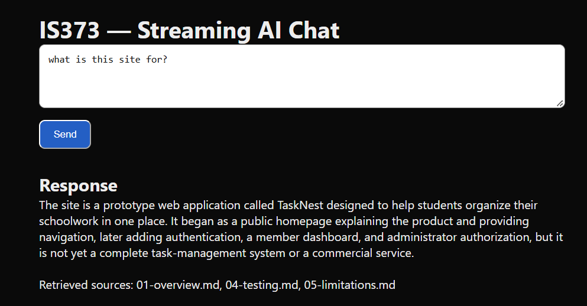
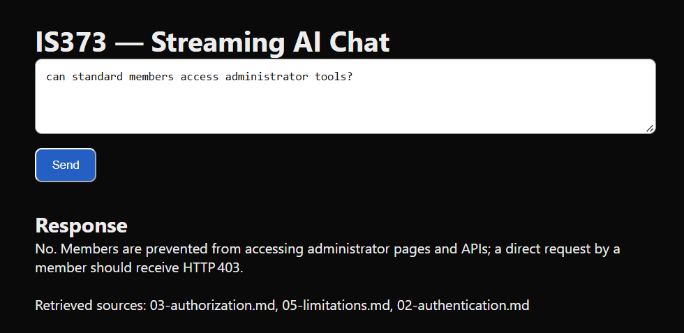
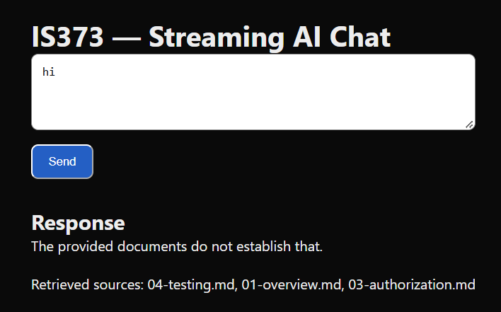

Document-grounded RAG chatbot
A Next.js streaming chat that retrieves relevant TaskNest documentation through local embeddings and LanceDB, then uses a hosted language model to respond.
Links to code, live pages, and experiment notes. I separate working prototypes from ideas and avoid presenting class exercises as production systems.
A Next.js streaming chat that retrieves relevant TaskNest documentation through local embeddings and LanceDB, then uses a hosted language model to respond.
Flashcard-style explanations and self-check questions about embeddings, vector search, graph relationships, and retrieval tradeoffs.
Earlier research into applied AI and programming, kept as a separate reference.
Research on forward-deployed engineering, AI application engineering, and how to document technical work accurately.
The chatbot is a local Next.js app, not a publicly hosted demo. In an Ubuntu/WSL terminal, from my existing project checkout:
cd ~/projects/is373-rag-prototype/chat
npm run devThen open http://localhost:3000 in a browser. Leave the terminal running; press Ctrl+C to stop it.
Install packages and build the local retrieval index before starting the server:
cd ~/projects/is373-rag-prototype/chat
npm install
node scripts/ingest.mjs
npm run devThe server also requires chat/.env.local containing GROQ_API_KEY=your_key_here. Keep the real key private and out of GitHub. The ingestion script uses the Markdown files in the repository's documents/ directory and creates the local rag-data/ vector store.
This is a screenshot-based walkthrough of the local TaskNest chatbot. It shows the exact questions, generated answers, and retrieved source filenames from three test interactions. The chatbot itself is not publicly hosted.


